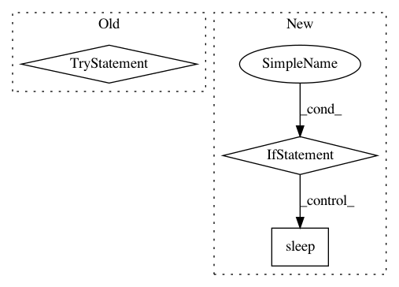

08af7771d1f1149f3da5a98bcdbf7e65abd409ba,nni/retiarii/strategies/tpe_strategy.py,TPEStrategy,run,#TPEStrategy#Any#Any#,43
Before Change
sample_space.extend(recorded_candidates)
self.tpe_sampler.update_sample_space(sample_space)
try:
_logger.info("stargety start...")
while True:
model = base_model
_logger.info("apply mutators...")
_logger.info("mutators: %s", str(applied_mutators))
self.tpe_sampler.generate_samples(self.model_id)
for mutator in applied_mutators:
_logger.info("mutate model...")
mutator.bind_sampler(self.tpe_sampler)
model = mutator.apply(model)
// run models
submit_models(model)
wait_models(model)
self.tpe_sampler.receive_result(self.model_id, model.metric)
self.model_id += 1
_logger.info("Strategy says: %s", model.metric)
except Exception:
_logger.error(logging.exception("message"))
After Change
_logger.info("stargety start...")
while True:
avail_resource = query_available_resources()
if avail_resource > 0:
model = base_model
_logger.info("apply mutators...")
_logger.info("mutators: %s", str(applied_mutators))
self.tpe_sampler.generate_samples(self.model_id)
for mutator in applied_mutators:
_logger.info("mutate model...")
mutator.bind_sampler(self.tpe_sampler)
model = mutator.apply(model)
// run models
submit_models(model)
self.running_models[self.model_id] = model
self.model_id += 1
else:
time.sleep(2)
_logger.warning("num of running models: %d", len(self.running_models))
to_be_deleted = []
for _id, _model in self.running_models.items():
if is_stopped_exec(_model):
In pattern: SUPERPATTERN
Frequency: 3
Non-data size: 3
Instances
Project Name: microsoft/nni
Commit Name: 08af7771d1f1149f3da5a98bcdbf7e65abd409ba
Time: 2020-12-27
Author: Quanlu.Zhang@microsoft.com
File Name: nni/retiarii/strategies/tpe_strategy.py
Class Name: TPEStrategy
Method Name: run
Project Name: ray-project/ray
Commit Name: e675e5b75a4470c01b4df577d4028b00e01d3d53
Time: 2021-01-23
Author: me@barakmich.com
File Name: python/ray/util/client/worker.py
Class Name: Worker
Method Name: __init__
Project Name: keras-team/autokeras
Commit Name: b048efa4f956b80266942caea6ee8b4311e1d17a
Time: 2018-04-08
Author: jin@tamu.edu
File Name: autokeras/classifier.py
Class Name: ClassifierBase
Method Name: fit